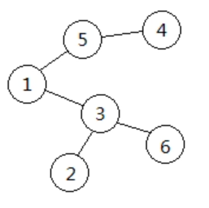
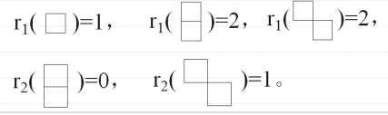
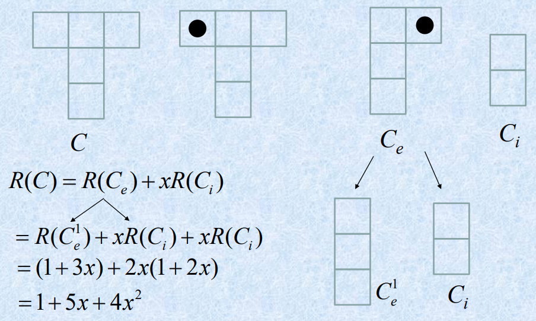
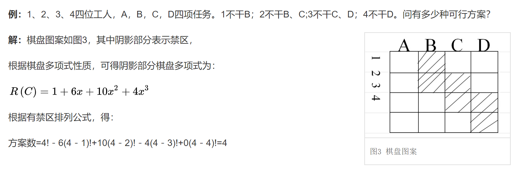
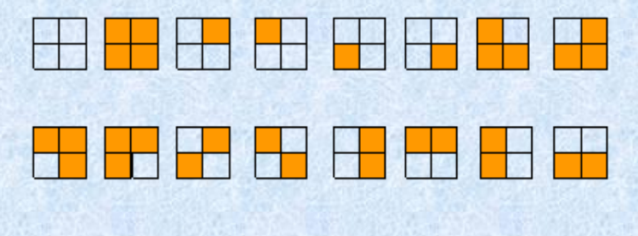
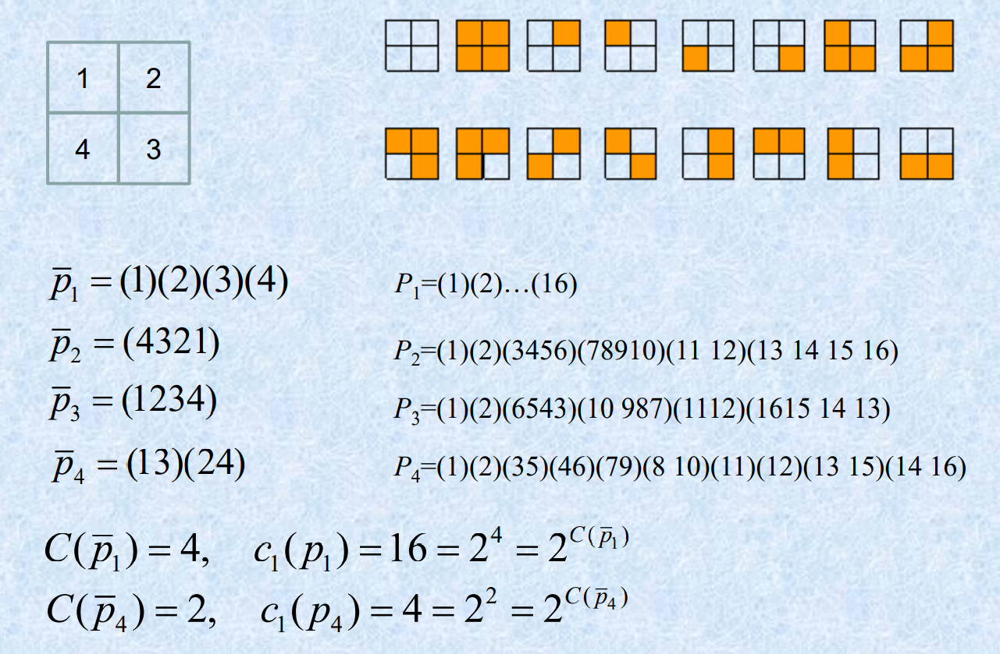

不是很感兴趣。
和积法则
N取r的可重组合数：
因为可以把可重结果，例如$1,1,1,2,2$，分别对应位置$+0,+1,+2,+3,+4$，然后映射到$1,2,3,5,6$。
于是n取r可重就转换成了n+r-1取r不可重。于是得到了答案。$+0,+1,…,+r-1$，所以从$1,…,n+r-1$中选$r$个后，再$-0,-1,-2,..,-r+1$就得到了一个答案。
- 注意这个问题转化是一一映射的，不能选择$+1,+2,+3,+4,+5$是因为存在方案$1,2,3,4,5$，他无法转化回去。
[例]：把r个相同的球，放入n个不同的箱子里，方案数是多少？
解：就是n取r的可重组合数。可以从n中取可重的r个盒子，再把这r个球放到对应的盒子中。
杂题
含数字6，能被3整除的5位整数有多少个？
- 手动数位dp，记$dp[i][j][0/1]$表示到第i位，模3余$j$，是否含6。直接状态转移。
排列组合
prufer序列
一棵标号树和一个prufer序列是一一对应的。
- 树转化为prufer序列：
- 将叶子结点中，最小标号的一个删除，序列中加入它的父亲。
- 重复该过程直到树只剩下两个结点。
- prufer序列转化为树：
- 构造一个集合$\{1,2,…,n\}$
- 找出集合中最小未在prufer序列中出现的数，将该数和prufer序列中第一个数连边
- 把该数和prufer序列中第一个数删除。
- 重复n-2次，把集合中剩余的两个点连边。
例：

它的prufer序列为$\{3,5,1,3\}$。由prufer序列构造树时，连边顺序为$(2,3),(4,5),(1,5),(1,3),(3,6)$。
杂题
从1~300中取3个不同的数，其和能被3整除，有多少种取法？
- 分组：只能三个都取同一组，或3=0+1+2每个组各取一个。于是答案是$3C_{100}^3+100^3$。
m个人从n个入口进站，只考虑同一个入口进站人的先后顺序，不考虑不同入口进站的先后顺序。求进站顺序方案数。
强行整了个插板法例题……相当于m个人插n-1个板隔开，还要考虑全排列。
答案是$\frac{(m+n-1)!}{(n-1)!}$，即把m个人和n-1个板都当作元素全排列，然后板是等价的，所以除去$(n-1)!$。
$x_1+x_2+…+x_n=r$，其中$x_1,x_2,…,x_n\geq 1$，都是整数。求解的个数。
- 这种也是插板法，答案为$C_{r-1}^{n-1}$。即把$1,1,…,1$（r个1）插$n-1$个板，分成n份。
$x_1+x_2+…+x_n=r$，其中$x_1,x_2,…,x_n\geq 0$，都是整数。求解的个数。
- 转化成$(x_1+1)+(x_2+1)+…+(x_n+1)=r+n,(x_1+1),…,(x_n+1)\geq 1$。答案就是$C_{n+r-1}^{n-1}$。
n个0，n个1，组成一个2n位二进制数。要求从左到右扫描，使得1的个数总是不小于0，求方案数。
其实就是n对括号合法匹配数。对于一个合法串，可以考虑其最后一个括号的匹配情况，即它一定满足形式：
而$A,B$都是合法的子串。所以P的方案数就是$P(n)=\sum_{i=0}^{n-1}P(i)P(n-1-i)$。即A和B的子串长度可以是$0..2(n-1)$。
这其实是卡特兰数的递推数列，即最终方案为$C_{2n}^n/(n+1)$。
排列的生成
字典序
对于一个排列$P_1P_2P_3…P_n$，求他下一个排列。
找到末尾最长降序子列：$P_{i+1}P_{i+2}…P_n$
记下$P_i$，找到比$P_i$大的最右面的一个数，记为$P_k$
交换$P_i,P_k$
- 把$P_k$右侧子列倒序排列。
例：$349687521$，$P_{i+1}…P_n=87521$，$P_i=6$，$P_k=7$
所以下一个字典序为$349712568$。
康托编码：记$a_i$为$P_i$右侧比$P_i$小的数字个数。则排列$P_1P_2P_3…P_n$可一一映射为其字典序排名：
注：$d=0,1,…,n!-1$
根据排列计算其字典序数是简单的。同样也可以求第k个排列。以$n=5$，求第$95$个排列为例：
- $95/4!=3……….23$（带余除法）
- $23/3!=3……….5$
- $5/2!=2……….1$
- $1/1!=1………0$
于是第一位为$4$（右边肯定有3个比他小），第二位为5（右边有三个比他小，其中4在他左侧），第三位为3（右边肯定有两个比他小），第四位为2，第五位为1。
所以第95个排列为45321。（注意从0开始数）
序数法
将一个排列$P_1P_2…P_n$一一映射到一个序列$a_{n-1}a_{n-2}…a_1$。其中，$a_i$表示序列中，$i+1$右侧比$i+1$小的数的个数。
例如：$349687521$对应的序数为$64332221$。显然，序列的范围是$00…0$到$(n-1)(n-2)…1$，共$n!$个。
求下一个排列：序数加一。序数的$a_1$是2进制，$a_2$是3进制，$a_3$是4进制，以此类推。
因此，序数$64332221+1=64332300$。
而序数转化为排列是简单的。从大到小依次找到数应该在的位置就好了。$64332300$对应的排列就是$419687523$。
容斥原理
错排
答案是：
- 记$A_i$为数字i在自己位置上。答案就是$|\bigcap_{i=1}^n \bar{A_i}|$。而:左式的理解可以为：“存在（至少）t个数字不在自己位置上的方案数”。
欧拉公式
$n=p_1^{\alpha_1}p_2^{\alpha_2}…p_n^{\alpha_n}$。记$[1,n]$中，$p_i$的倍数集合为$A_i$，则$|A_i|=\frac{n}{p_i},|A_i\cap A_j|=\frac{n}{p_ip_j}$。于是比n小和n互质的数的个数就为$|\bigcap_{i=1}^n\bar{A_i}|$。
杂题
m个元素的集合，到n个集合满射的个数为$n^m-C_n^1(n-1)^m+C_n^2(n-2)^m-…+(-1)^{n-1}C_n^{n-1}1^m$
- 记$A_i$为第i个元素没有原象的方案。答案就是$|\bigcap_{i=1}^n\bar{A_i}|$。而:左式的理解可以为：“存在（至少）t个元素没有原象的方案数”。
鸽巢原理
Ramsey数
记$r(p,q)$为参数是$p,q$的Ramsey数。它的含义是，对任意$n>r(p,q)$，那么n个点的完全图，用两种颜色去边染色，要么存在$p$个顶点构成的子图的边全是一种颜色，要么存在$q$个顶点构成的子图的边全是另一种颜色。
即$n\geq r(p,q)$，要么存在p个人相互认识，要么存在q个人相互不认识。
杂题
参加一个宴会的人中，至少存在两人，它们认识的宴会上的人数相同。
- 考虑n个人参加，如果他们认识的人两两不同，则他们认识的人数从小到大排就是$0,1,2,…,n-1$（共n个），那么显然认识最多的人要认识剩下的所有人，而认识最少的人却一个人都不认识，这矛盾。
1到2n的正整数中，任取n+1个，则它们中必有一对数，其中一个是另一个的倍数。
- 考虑所有的正整数都能写成$A*2^B$的形式，A是奇数，B是正整数。而很显然$[1,2n]$中的奇数只有n个，故取n+1个数肯定会有两个数对应的A相同。则它们之间有倍数关系。
设$a_1,a_2,…,a_m$是一个正整数序列，则存在$1\leq k\leq l\leq m$，使得$a_k+a_{k+1}+…+a_l$是m的倍数。
- 考虑前缀和模m的结果，记$S_n=\sum_{i=1}^n a_i\quad mod\; m$。若存在n，使得$S_n=0$则直接得证。否则，$S_n$都不为0，则它们为$1,2,…,m-1$，又因为有m个前缀和，所以肯定有两个前缀和相同。将它们相减，就得到了一段连续的模m为0的子序列。
设$a_1,a_2,…,a_n$是一组正整数序列，满足$a_1+a_2+…+a_n\leq r$。求证$\forall m<2n-r$，都存在一个子序列使得$a_h+a_{h+1}+…+a_{k-1}+a_k=m$。
- 考虑前缀和$S_n$，然后可以构造两组单调的正整数序列为$S_1,S_2,…,S_n$和$S_1+m,S_2+m,…,S_n+m$，共2n个数。显然这2n个数都小于等于$r+m$。如果$2n>r+m$，则必定存在两个数相等。而且一个数在前一个序列，另一个数在后一个序列。则存在$h,k$使得$S_h-S_k=m$。
$n^2+1$个不同实数组成的序列中，一定存在长为n+1的单调子序列。
记$f[i]$为从第i位开始最长严格递增的子序列长度。若$\forall 1\leq i\leq n^2+1$，都有$f[i]\leq n$的话，考虑抽屉原理，则至少有$f[i_1]=f[i_2]=…=f[i_n]=f[i_{n+1}]$。
于是可以考虑$a_{i_1},a_{i_2},…,a_{i_n},a_{i_{n+1}}$。若它们单调减，则构成了一个长为$n+1$的单调减序列。否则，若存在$a_{i_1}
六个点的完全图中，用红/黑给边染色，必然存在同色三角形。
- 考虑点A连的五条边，根据抽屉原理，至少有三条边是同色的，不妨设为$AB,AC,AD$。再考虑边$BC,BD,CD$，若它们中有一条是和$AB,AC,AD$同色，则存在了同色三角形。否则，它们都是另一种颜色，则$BCD$就是一个同色三角形。
生成函数
普通生成函数
求解多重递推可以这样，例如：
不妨设数列的生成函数分别是$A(x),B(x)$：
然后可以凑出递推式：
同理，由第二个递推式有$(1-9x)B(x)-xA(x)=b_1=1$。所以可以解方程，得：
指数生成函数
例如错排问题：
可以设指数型生成函数：
其中，$\frac{D_n}{n!}$就是$x^n$前的系数。考虑多项式乘法。
整数拆分问题
将n拆成1，2，4，5的和，不允许重复。
- $(1+x)(1+x^2)(1+x^4)(1+x^5)$中，$x^n$前的系数
将n拆成1，2，4，5的和，允许重复。
- $(1+x+x^2+x^3+…)(1+x^2+x^4+x^6+…)(1+x^4+x^8+x^{12}+…)(1+x^5+x^{10}+…)$
棋盘多项式
棋盘是由若干格子组成的。格子间不一定相连，但每个格子都有两个属性：行和列。行和列都是整数。格子里可以放棋子。
记$r_k(C)$表示在棋盘C中放k个棋子的方案数，要求同一行、同一列至多一个棋子。
那么$R(C)=\sum_{i=1}^nr_i(C)x^i$称为棋盘C的棋盘多项式。
例：

性质
- 对于一个棋盘C，对于任意一个格子x，记C去掉x这一格子后的剩余棋盘是$C_e$，记C去掉x所在行和列所有的格子后的剩余棋盘为$C_i$，则有：
原理就是，要么格子x里有棋子，即$r_{k-1}C_i$，要么格子x里没棋子，即$r_k(C_e)$。
- 若对于一个棋盘C，它是由两部分$C_1,C_2$组成的，且$C_1$和$C_2$中的行列都没有交集。则有：例：

应用——有禁区的方棋盘放棋子方案数
一个$n\times n$的方格棋盘，其中有一些禁区。则在其中放n个棋子（不许同一行同一列有多个棋子）的方案数为：
其中，$r_k(C)$表示在禁区棋盘放k个棋子的方案数。例：

证明：
设$A_i$为第i行的那个棋子落入禁区的放置方案数。则答案是$|\bigcap_{i=1}^n\bar{A_i}|$。
而$\sum_{i=1}^n|A_i|=r_1(C)(n-1)!,\sum_{i<j}|A_i\cap A_j|=r_2(C)(n-2)!$。于是由容斥原理可以得出。
应用——错排
- n的错排数为，$n\times n$的棋盘，禁区为对角线，求方案数。显然，禁区棋盘的多项式为$R(C)=(1+x)^n=1+C_n^1x+…$。
- 所以方案数为$n!-C_n^1(n-1)!+C_n^2(n-2)!-…+(-1)^nC_n^n$。
莫比乌斯反演
其中，$p_1,p_2,…,p_n$是互不相同的素数。
莫比乌斯反演的证明就是：
Burnside定理和Polya定理
Burnside定理
考虑计数问题。用两种颜色去染$2\times 2$的棋盘，旋转相同算一种。求方案数。
首先，要画出左右可能的染色方案，即$2^4=16$种。如下图：

按行优先，我们把这些方案数记为1，2，….，16。然后我们需要去重。
- 旋转$0$°，则考虑这些染色方案间的等价置换关系。置换为$p=(1)(2)(3)…(16)$。意思是，第i个方案在旋转0°后就是第i个方案。
- 逆时针旋转90°，则置换为$p=(1)(2)(3456)(78910)(11\;12)(13\;14\;15\;16)$。意思是，第1个方案逆时针转90°后还是第1个，第3个方案逆时针90°后是第4个方案……
- 顺时针旋转90°，则置换为$p=(1)(2)(6543)(10\;987)(11\;12)(16\;15\;14\;13)$
- 旋转180°，置换为$p=(1)(2)(3\;5)(4\;6)(7\;9)(8\;10)(11)(12)(13\;15)(14\;16)$。
然后去重方案数就是每个置换中长度为1的置换数的平均。即：
最后答案是6种。
Polya定理
显然Burnside定理要画出所有的方案数，这不太好。考虑polya定理。同样一个问题，对棋盘入手：

然后显然，棋盘有4个元素。
旋转0°，棋盘元素的置换为$p=(1)(2)(3)(4)$
逆时针旋转90°，棋盘元素的置换为$p=(4321)$。4号到3号位置上，3号到2号位置上….
- 顺时针旋转90°，棋盘元素的置换为$p=(1234)$。
- 旋转180°，棋盘元素的置换为$p=(13)(24)$。
然后统计的方案数就是$\frac{2^4+2^1+2^1+2^2}{4}=6$，即考虑“染色数^置换节数”的平均值。（置换由几个小置换乘积而成）
有重复元素的圆排列
从1，2，3，4种，取4个数出来（可以重复）。将取出来的数排成一个圆排列（旋转相同算一种），则方案数有多少？
首先定义一个圆排列的周期。考虑一个圆排列：(1 2 1 2)，它的周期是2（想象成一个圆）。
圆排列(1 2 3 1)的周期为4，(1 1 1 1)的周期为1。
即周期就是最小循环节长度。
然后要求的答案就是$\sum_{d|n}M(d)$，其中$M(d)$表示周期为d的圆排列方案数。
显然有$\sum_{d|n}M(d)\times d=m^n$，所有的方案数就是每个周期为d的方案数再乘上它的周期。
莫比乌斯反演，有：
所以最后的答案就是：
卡特兰数
应用：
- n边凸多边形，划分成若干三角形的方案数。
- 以1，2，….，n的顺序入栈，不同出栈结果的方案数。
- n对括号合法匹配串数。
- n个结点的二叉树的不同形态数。